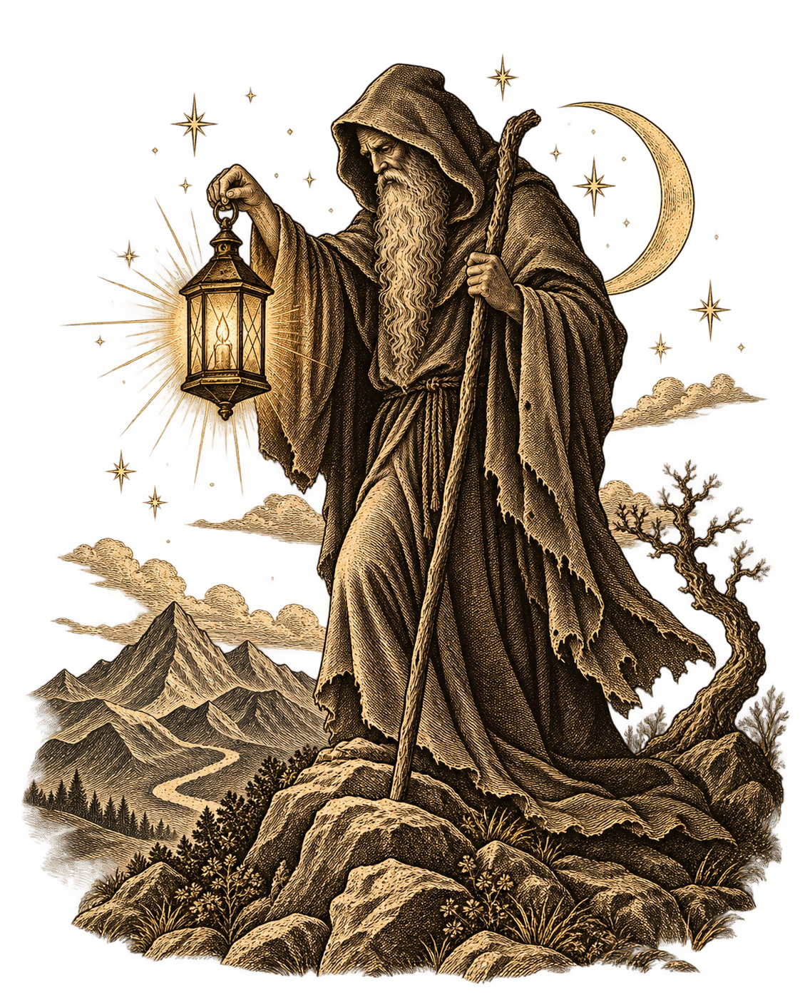

XXII
Учебник старших арканов

Карта дня
IX · Отшельник →
Какой вопрос стоит обдумать без внешнего шума?
Узнай аркан
Посмотри на символы и назови карту.
Учебник старших арканов

Карта дня
Какой вопрос стоит обдумать без внешнего шума?
Посмотри на символы и назови карту.